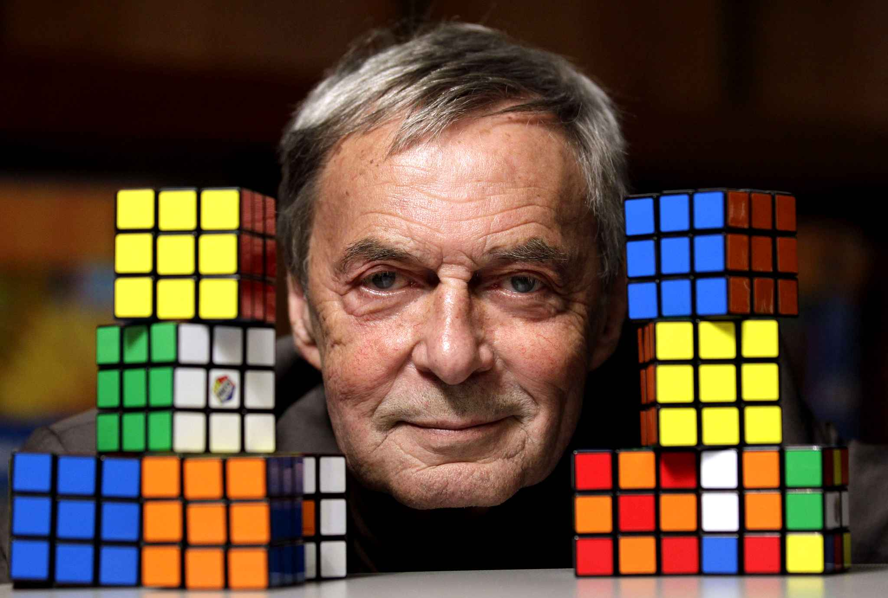

El original rompecabezas fue inventado en 1974 por Erno Rubik, un escultor y profesor de arquitectura de la Universidad de Budapest. Poco hacía presagiar que esa idea original se convertiría con los años en el juguete más vendido del mundo. Para Erno, su cubo era más que un juguete, suponía un instrumento para explicar a sus alumnos conceptos académicos como las relaciones espaciales o los contrastes de la condición humana a través de un objeto de arte que exploraba nuevas formas.
A mediados de la década de 1970, Ernő Rubik trabajaba en el Departamento de Diseño de Interiores en la Academia de Artes y Trabajos Manuales Aplicados en Budapest. Rubik no se dio cuenta de que había creado un rompecabezas hasta la primera vez que mezcló su nuevo cubo e intentó volverlo a la posición original. Originalmente, el cubo de Rubik fue llamado “cubo mágico” en Hungría. Después de un año de ser creado, “Ideal Toy Company” pedía al menos un nombre reconocible para registrar el juguete; el acuerdo puso a Rubik en el centro de atención debido a que el cubo mágico fue renombrado como su inventor.

Erno Rubik creador del cubo original de los cubos Rubik
Erno Rubik tardó más de un mes en resolver su propio puzzle.
Desde su existencia, se estima que se han venido más de 350 millones de cubos de Rubik en el mundo.
El cubo de Rubik más caro del mundo incluye diferentes gemas en cada una de sus caras: 22,5 quilates de amatistas, 34 quilates de rubíes y 34 quilates de esmeraldas. Tiene un precio estimado de 1,5 millones de dólares.
El cubo de Rubik más grande del mundo se construyó en la ciudad austriaca de Linz y podía ser resuelto por control remoto.
Matt Valk´s tiene el record mundial en resolver el cubo en menos tiempo durante una competición, empleando únicamente 5,5 segundos
El cubo de Rubik estándar está compuesto de 6 caras, que incluyen a su vez 9 caras más pequeñas de diferentes colores.
En 2008, Tomas Rokicki presentó el algoritmo de Dios, con el que se asegura poder resolver el cubo en 23 movimientos a partir de una posición inicial.
Existen cuarenta y tres trillones doscientos cincuenta y dos mil tres billones doscientos setenta y cuatro mil cuatrocientos ochenta y nueve millones ochocientas cincuenta y seis mil posiciones posibles en el cubo de Rubik.
Jessica Fridrich, estudiante de la Universidad de Binghantom creó un método para resolver el cubo de Rubik en tan solo 10 segundos.
El CubeStormer III, un robot fabricado con un Samsung Galaxy S4, un procesador ARM y piezas de Lego, resolvió el problema del cubo en solo 3,253 segundos.